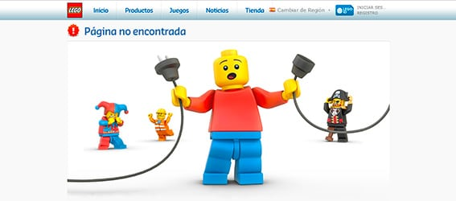

- Visibilidad del estado del sistema
- Relación entre el sistema y el mundo real
- Control y libertad del usuario
- Consistencia y estándares
- Prevención de errores
- Reconocimiento antes que recuerdo
- Flexibilidad y eficiencia de uso
- Estética y diseño minimalista
- Ayudar a los usuarios a reconocer, diagnosticar y recuperarse de errores
- Ayuda y documentación